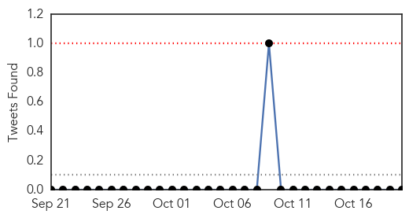

30 Day Trends
Web: 0 alerts, 0 warnings
Twitter: 0 alerts, 0 warnings
Top Articles:
- 0.997
- Dengue spreads at alarming level, as more cases surface
- 0.992
- Outbreak of Dengue Fever at an Alarming Level in Pakistan
- 0.991
- Dengue rears its head in Jaipur, claims 6 lives in a month
- 0.982
- Delhi struggles to control dengue; Health officials blamed for slow response
- 0.979
- CDC says woman bitten by rabid dog hospitalized
- 0.979
- Science, Technology and Medicine News Updates From Asia
- 0.967
- ‘Majority of dengue cases reported in Karachi’
- 0.964
- Two More Reasons Besides West Nile Virus to Fear Mosquitoes in California
- 0.949
- Number of dengue-affected people crosses 2000 in Rawalpindi
- 0.918
- PMC confirms just one dengue death in Pune since January
- 0.910
- WHO responds to deteriorating health situation in Taiz, Yemen [EN/AR] - Yemen
- 0.847
- Vietnam reports 30 percent increase in dengue this year
- 0.804
- Latest News & Updates at Daily News & Analysis
- 0.743
- Fogging caught in fog
Top Tweets:
- 0.661
- Flavivirus news: Rawalpindi, Multan face dengue fever outbreak as more cases surface - DunyaNew... https://t.co/Ku5YHRBikh pathogenposse
Web/News Articles

Tweets
Article Locations

Article Confidences